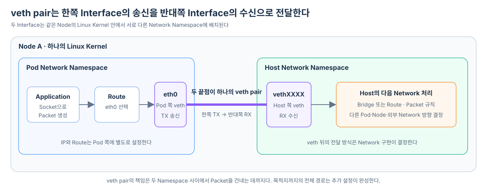

Network Namespace를 만들면 Process마다 Interface, IP, Routing Table과 Port 공간을 분리할 수 있다. 하지만 격리는 통신 경로를 자동으로 만들지 않는다. 새 Namespace 안에 Application을 실행해도 외부로 이어지는 Interface와 Route가 없다면 Host나 다른 Namespace로 Packet을 보낼 수 없다.
격리된 Network Namespace 사이에 가장 작은 연결을 만드는 Linux 장치가 veth pair다. veth는 Virtual Ethernet의 줄임말이며, 항상 두 개의 가상 Ethernet Interface가 한 쌍으로 만들어진다.

veth pair는 한쪽의 출력을 반대쪽 입력으로 전달한다
일반 Network Interface는 Cable이나 가상 Switch 같은 Network와 연결된다. veth pair에서는 두 Interface가 서로 직접 연결된다.
veth-a ═══════════════════ veth-b
veth-a로 송신한 Packet은 veth-b의 수신 Packet으로 나타난다. 반대 방향도 같다.
veth-a에서 TX
→ veth pair 내부 전달
→ veth-b에서 RX
veth-b에서 TX
→ veth pair 내부 전달
→ veth-a에서 RX
여기서 TX는 Transmit, 즉 송신을 뜻하고 RX는 Receive, 즉 수신을 뜻한다. 통신 장비, Network Interface와 Linux의 Packet 통계에서 널리 사용하는 약어다.
TX와 RX는 Packet 자체에 고정된 속성이 아니라 각 Interface에서 바라본 방향이다. 따라서 같은 Packet도 veth-a에서는 TX로 기록되고, 반대편인 veth-b에서는 RX로 기록된다.
같은 Packet
veth-a의 관점 TX: 내가 내보낸 Packet
veth-b의 관점 RX: 내가 받은 Packet
두 Interface는 하나의 장치를 양쪽에서 보는 별칭이 아니다. 각각 이름, MAC 주소와 Link 상태를 가진 별도의 Interface지만, Packet 전달 대상이 서로로 고정된 한 쌍이다. 한쪽 Link가 내려가 있으면 연결도 정상적으로 사용할 수 없다.
처음에는 두 Interface가 같은 Namespace에 만들어진다
veth pair를 만들면 처음에는 명령을 실행한 Network Namespace 안에 두 Interface가 함께 존재한다.
Host Network Namespace
├─ veth-host
└─ veth-pod
이 상태에서도 한쪽에 보낸 Packet은 반대쪽에 나타나지만, 아직 Namespace 사이를 연결한 것은 아니다. 두 Interface가 모두 같은 Network Namespace에 있기 때문이다.
Namespace를 연결하려면 한쪽 Interface를 대상 Namespace로 옮긴다.
Pod Network Namespace Host Network Namespace
└─ veth-pod ═══════ veth-host ─┘
옮겨진 Interface는 이제 Host에서 일반적인 ip link 목록을 볼 때 직접 나타나지 않고, 대상 Namespace 안에서 조회해야 보인다. Kubernetes 환경에서는 Pod 쪽 Interface의 이름을 보통 eth0으로 바꾼다.
Pod Network Namespace Host Network Namespace
└─ Pod 쪽 veth 끝점 ═══════ Host 쪽 veth 끝점 ─┘
이름: eth0 이름: vethXXXX
Interface를 연결해도 IP와 Route는 따로 설정해야 한다
veth pair는 Packet이 건널 수 있는 Link만 만든다. 어느 IP를 사용할지, 어떤 목적지 Packet을 그 Interface로 내보낼지는 결정하지 않는다.
eth0이 어떤 상태를 가진 Interface인지, Route가 장치가 아니라 Kernel의 경로 선택 규칙이라는 의미와 목적지 IP·다음 경유지·출력 Interface의 관계는 Route는 어떻게 eth0을 선택할까?에서 하나의 Packet 예시로 자세히 살펴본다.
통신하려면 보통 다음 상태가 추가로 필요하다.
| 필요한 설정 | 결정하는 것 |
|---|---|
| Interface Link 활성화 | Interface가 Packet을 송수신할 수 있는가 |
| IP 주소 | Namespace가 어떤 주소를 자신의 것으로 사용할 것인가 |
| Routing Table | 어떤 목적지를 veth 쪽으로 보낼 것인가 |
| Host의 전달 경로 | 반대편에서 받은 Packet을 어디로 이어 보낼 것인가 |
설명을 위한 단순한 구성을 생각해 보자.
Pod Namespace
eth0: 10.0.0.2/24
default route: 10.0.0.1 방향
Host Namespace
veth-host: Pod에서 나온 Packet 수신
Pod의 Application이 직접 연결된 대역 밖으로 Packet을 보내면 Pod Routing Table은 Default Route를 선택한다. Packet은 Pod 쪽 veth 끝점인 eth0에서 송신되고, Peer인 Host 쪽 끝점 veth-host에서 수신된다.
Application
→ Pod Namespace의 Route 판단
→ Pod 쪽 veth 끝점인 eth0에서 TX
→ Peer인 Host 쪽 veth 끝점에서 RX
여기까지가 veth pair의 책임이다. Host가 받은 Packet을 다른 Pod, 물리 Network 또는 Internet으로 전달하는 일은 Host의 Route, Bridge, NAT나 다른 Network 구현이 맡는다.
Host 쪽 Interface는 Bridge에 연결할 수도 있다
같은 Node에 여러 Pod가 있다면 Pod마다 veth pair를 만들 수 있다.
Pod A 쪽 veth 끝점(eth0) ═══ Host 쪽 끝점(veth-a) ─┐
├→ Linux Bridge
Pod B 쪽 veth 끝점(eth0) ═══ Host 쪽 끝점(veth-b) ─┘
Host 쪽 veth Interface들을 하나의 Linux Bridge에 연결하면 Bridge가 같은 Layer 2 Network의 가상 Switch처럼 Packet을 전달할 수 있다. Pod A가 Pod B의 MAC 주소 방향으로 Frame을 보내면 Bridge는 대응하는 Host veth로 전달한다.
모든 CNI 구현이 Linux Bridge를 사용하는 것은 아니다. Host Routing Table로 Pod별 경로를 만들거나, eBPF Program 또는 가상 Switch를 사용할 수도 있다. 공통점은 Pod 쪽 Interface와 Host 쪽 Network 처리를 연결하는 경계가 필요하다는 것이다.
Kubernetes에서는 CNI가 veth를 Pod Network로 확장한다
veth pair의 책임은 같은 Linux Kernel 안에서 두 Network Namespace 사이에 Packet을 전달하는 데까지다. Kubernetes에서는 Container Runtime과 CNI 기반 Network 구현이 veth, Pod IP와 Route를 준비하고, Host 쪽 끝점을 같은 Node와 다른 Node의 Pod Network로 이어 준다.
이 구성 과정과 Packet이 Namespace 경계를 넘은 뒤 같은 Node 또는 다른 Node의 Pod로 전달되는 흐름은 CNI는 Pod의 veth·IP·Route와 Node 간 경로를 어떻게 준비할까?에서 이어서 살펴본다.